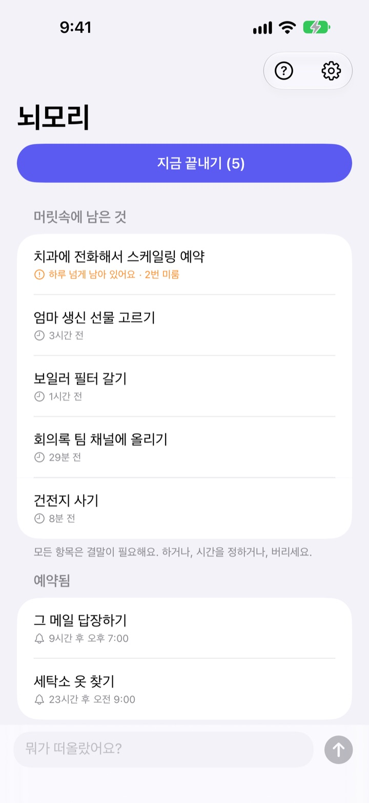
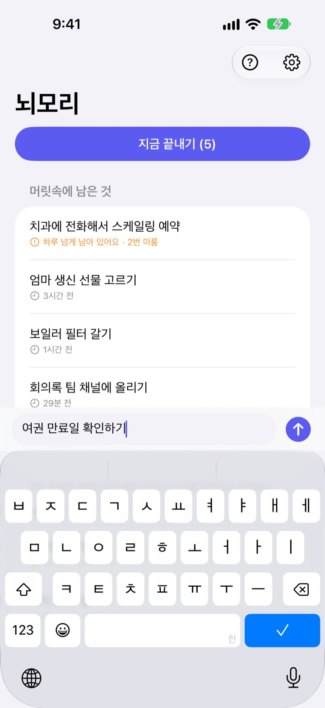
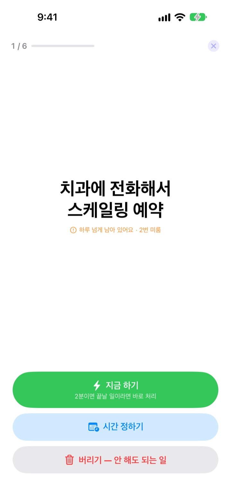
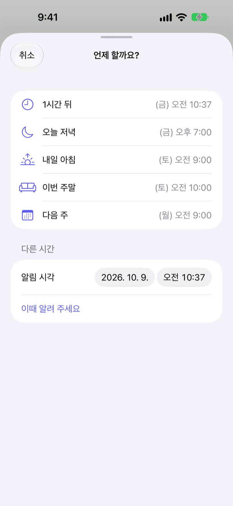

떠오르면 적고,
저녁에 끝내요
"아 맞다, 그거 해야 하는데." 그 순간 몇 글자 적고 머리에서 내려놓으세요. 저녁에 남은 것만 하나씩 끝내면 됩니다.
모든 기능이 무료예요. 계정도 로그인도 없어요.

직접 해 보세요
떠오른 일을 적거나 예시를 눌러 보세요. 그다음 지금 끝내기를 누르면 하나씩 결말을 냅니다.
작은 일도 머릿속에서는 자리를 차지해요
샤워하다가, 운전하다가, 잠들기 직전에 "그거 해야 하는데"가 떠오릅니다. 적을 곳이 마땅치 않으니 기억하려고 붙잡고 있고, 그사이 지금 하던 일에 집중이 흐려집니다. 할 일 앱은 목록과 마감일을 정하라고 하니 적는 것조차 일이 됩니다.
3초 적고, 잊어버리기
앱을 열면 화면 아래 입력줄에 바로 적습니다. 목록도 폴더도 마감일도 고르지 않아요.
잠금화면 위젯을 탭하면 빈 줄로 열리고, 시리에게 뇌모리에 기억해라고 말하거나 액션 버튼에 연결하면 앱을 열지 않고도 적힙니다.

저녁에 하나씩 결말을 내요
남은 게 있으면 밤 9시에 한 번 알려 드려요. 다 끝냈으면 울리지 않습니다.
정리를 시작하면 하나씩 크게 보여 주고, 지금 하기, 시간 정하기, 버리기 중 하나를 고르면 다음으로 넘어갑니다. 2분이면 끝날 일은 타이머를 켜고 바로 처리해요.

쌓여서 썩는 건 없어요
시간을 정한 일은 1시간 뒤, 오늘 저녁, 내일 아침, 이번 주말, 다음 주 중에 고르면 그때 다시 알려 드려요. 알림에서 바로 했어요, 내일 아침, 버리기를 누를 수 있습니다.
하루 넘게 남은 것과 여러 번 미룬 것은 표시돼서, 계속 밀리는 일이 눈에 띕니다.

시작은 세 단계면 돼요
- 1
떠오르면 적어요
입력줄, 잠금화면 위젯, 시리 중 가장 가까운 곳에 몇 글자만 적습니다.
- 2
알림을 허용해요
처음 적을 때 한 번 묻습니다. 저녁 알림과 정해 둔 시각 알림에 쓰여요.
- 3
저녁에 끝내요
알림을 누르거나 지금 끝내기를 눌러 남은 것마다 결말을 냅니다.
목록에서 바로 하는 법
- 항목을 탭
- 했어요, 시간 정하기, 버리기 중에 고르기
- 오른쪽으로 밀기
- 했어요 (목록에서 지워져요)
- 왼쪽으로 밀기
- 버리기, 또는 미루기로 시간 정하기
- 지금 끝내기
- 남은 것을 하나씩 크게 보며 정리하기
- 뇌모리에 기억해
- 시리에게 말해서 앱을 열지 않고 적기
- 설정 ▸ 저녁 알림
- 알림 시각 바꾸기, 끄기
시간 정하기의 오늘 저녁은 저녁 7시, 내일 아침은 9시, 이번 주말은 토요일 오전 10시, 다음 주는 월요일 오전 9시예요. 원하는 날짜와 시각을 직접 고를 수도 있어요.
자주 묻는 질문
앱을 열지 않고 적을 수 있나요?
네. 시리에게 뇌모리에 기억해라고 말하면 무엇을 적을지 묻고 바로 저장합니다. 단축어 앱의 꺼내 두기 동작을 설정 ▸ 동작 버튼에 지정하면 버튼 한 번으로 적을 수 있어요.
잠금화면 위젯은 어떻게 추가하나요?
잠금화면을 길게 누르고 사용자화 ▸ 잠금 화면 ▸ 위젯 영역을 누른 뒤 뇌모리 위젯을 추가합니다. 탭하면 앱이 빈 줄로 열리고, 남은 개수도 보여 줘요. 홈 화면에도 작은 위젯을 둘 수 있습니다.
저녁 알림 시각을 바꾸거나 끄고 싶어요.
앱 오른쪽 위 톱니바퀴 ▸ 저녁 알림에서 시각을 바꾸거나 끌 수 있어요. 기본은 밤 9시이고, 남은 게 없는 날에는 울리지 않습니다.
알림이 오지 않아요.
뇌모리 설정에 알림이 꺼져 있다는 안내가 보이면 그 버튼을 눌러 iPhone 설정에서 알림을 켜 주세요. 남은 게 하나도 없는 날에는 저녁 알림이 오지 않는 것이 정상이에요.
시간을 정한 일은 어떻게 돌아오나요?
정한 시각에 알림이 옵니다. 알림을 길게 누르면 했어요, 내일 아침, 버리기를 바로 고를 수 있어요. 아무것도 누르지 않으면 목록의 머릿속에 남은 것으로 돌아와 다음 정리 때 다시 결말을 냅니다.
했어요나 버리기를 누른 일을 되살릴 수 있나요?
아니요. 결말을 낸 일은 목록에서 지워지고 보관함이 없습니다. 아직 확실하지 않다면 버리기 대신 시간 정하기를 고르세요.
기기를 바꾸면 적은 내용이 옮겨지나요?
아니요. 적은 내용은 이 기기 안에만 저장되고 iCloud나 서버로 보내지 않습니다. 앱을 지우면 함께 지워져요.
어떤 기기에서 쓸 수 있나요?
iOS 17 이상의 iPhone에서 쓸 수 있어요.
궁금한 점이나 버그는 mizzking75@gmail.com로 보내 주세요. 기기 모델과 iOS 버전을 함께 적어 주시면 빨리 확인할 수 있어요.